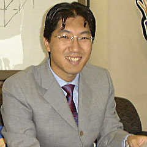
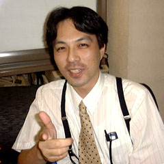
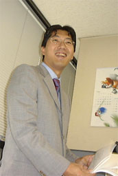
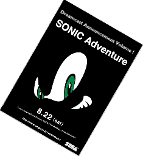
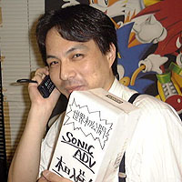
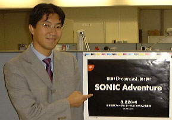

| Announcement! Sonic Production Announcement! |
| Event Name: | Sonic Adventure Production Presentation |
| Time: |
August 22nd, 1998 First Presentation: 10:00 to 11:00 Second Presentation: 13:30 to 14:30 The content of both presentations is exactly the same. |
| Location: | Tokyo International Forum, Hall A (Yurakucho) |
|
Free admission (no ticket required).
Please note, however, that admission is on a first-come, first-served basis, and we reserve the right
to refuse admission when the venue is full or after the show has started.
There will also be a special souvenir for those who enter. | |
| Comment: | ||
|  |
Yuji Naka Producer, Sonic Team | |
|
It's been four years since Sonic & Knuckles. As the first software title on the Dreamcast, we are pleased to announce the latest Sonic game. This time, we would like to invite all the people who have always supported us the most since our first unveiling. I hope you will be able to be there to witness this presentation.
| ||
|  |
Mr. Takezaki CS Promotion Department | |
|
It's great to announce hardware, but without software, it's just a box. What about Sega's software? The reason why I've kept my mouth shut until today, despite everyone's suggestions, is because I wanted to share this presentation with everyone. | ||
| A Little Conversation | |
|
On the occasion of the Sonic Adventure Production Presentation
| |
|
Takezaki: It's finally time to announce the first Dreamcast software from Sonic Team.
It's been four years since the last new Sonic game created by the original Sonic Team, Sonic and Knuckles
for the Mega Drive, which was released in 1994, wasn't it, Mr. Naka? Naka: Yes. We've been getting a lot of requests from our fans for a new Sonic game. The time has finally come for us to respond to their requests. Takezaki: I believe Sonic Team just released Burning Rangers in February of this year. When did you start development on Sonic Adventure? |
|
|  |
Naka: In fact, we started thinking about this new title right after the development of NiGHTS
for the Saturn ended. As we incorporated various ideas that we wanted to do such and such a thing if we were going to do a Sonic game, it gradually became a large scale work. In order to realize these ideas, we decided to develop the game on the Dreamcast. Takezaki: What kind of game will the next Sonic be?
|
|
Naka: I'm confident that the new Sonic will be able to show the future standard of gaming that has never been seen before.
However, since we're having a presentation, I can't tell you any more about it today.
I can't tell you much more today (laughs). (laughs) If I talk too much about the contents,
the presentation on August 22 will be meaningless.
Takezaki: That's true. (laughs)
| |
|
Naka: Yes. The presentation will be held on Saturday, August 22nd, at Tokyo International orum Hall A in Yurakucho.
Since we have been given the opportunity to present Sonic, we wanted to make sure that the fans who are always the most enthusiastic supporters
would be there. We've decided to make the event open to everyone, even those who are not members of the press
or related parties. We're planning to have two showsm but we're thinking of having only the fans participate the first one, and the people involved in the second one. |
 |
|
And Sega partners.
The staff and I are hoping to have a system that will give priority
to those who are interested in the event. Takezaki: Speaking of the Tokyo International Forum, it is very convenient for transportation near the station. It's just one stop away from Tokyo Station over at Yurakucho Station, so it is easy to find for those who come to Tokyo during their summer vacation. Naka: Yes, the date of August 22 was also decided in view of the fact that it was a Saturday during the summer vacation. It would have been better if it was a little later so that people could have a close look at the finished product, but the following weekend would be the last week of the summer vacation, and everyone would have been busy catching up on their homework. |
|
 Ho, call headquarters! |
Takezaki: 発表会は、いったいどんな内容になるのですか？ Naka: 内容は、せっかく来ていただいた方の期待を裏切らないように、なるべく良いものにしようと 今も多くのスタッフと一緒に話し合いをおこなっている最中です。 また、来ていただいた方への記念になるおみやげも現在、いろいろ検討中です。 期待していて下さい。 Takezaki: 当日は混雑が予想されると思うのですが、チケット予約などはしなくても大丈夫なのです か？ |
|
Naka: 誰でも気軽に遊びに来ていただけるために、先行予約などは行っていません。東京国際フ
ォーラムは一度に５千人入る会場なので、２回で１万人ですよね。僕は、そんなに人が来て
くれるのかなぁ…なんて心配しているのですが（笑）。 でももし万が一、１回目が満席になってしまったら、その後に並んでいる方には、２回目のチ ケットをお渡しすることになると思います。 入場無料の自由来場型イベントなので、実際のところ何人の人に来ていただけるのか分か らないのですが、せっかく来ていただいた方々には、できるかぎり親切な対応をとれるよう、 これから８月２２日までは精一杯の準備をしていきたいと思っています。
Takezaki: 今から８月２２日が楽しみですよね。
Naka: 小さなお子さんから、今までソニックを応援してきてくれたユーザーの皆さんまで、きっと満
足していただける発表会になると思います。 ...ステージにあがるのは嫌だなぁ（笑）。  |
|
|
さあ、この先の情報は今週、来週のゲーム専門誌をチェック！ ７月２６日のファミ通のイベント「ゲームサーカス５００ ｉｎ Ａｋｉｈａｂａｒａ」 にも中さんが登場！さらに深い情報が聞けるかも！ | |
| SONIC TEAM INFORMATION | |